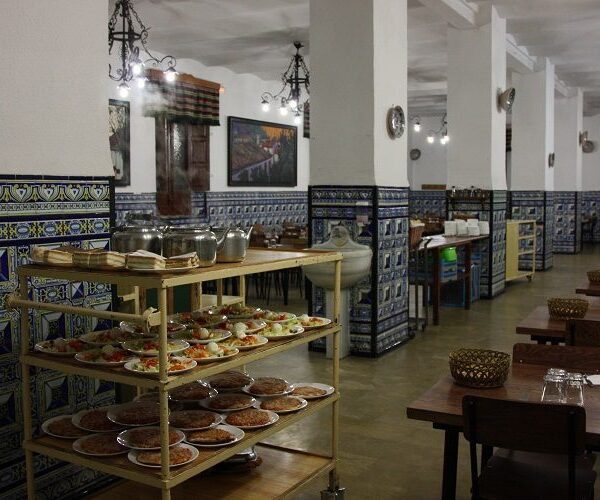

Contáctanos
¿Quieres ser voluntario/a de Aaqua?
Escríbenos o llámanos y cuéntanos por qué nos has elegido. Nos pondremos en contacto contigo lo antes posible.
Email
aaqua@hotmail.es
Teléfono
José: +34 609 10 62 94
Teléfono
Berta: +34 659 05 75 92
Dirección
Plaza Luis García Berlanga 1, 28223 Humera, Pozuelo de Alarcón. Horario con cita previa.

Escríbenos
Cuéntanos por qué quieres ayudar
Ya sea con tu tiempo como voluntario/a, con una donación de alimentos o con el apoyo de tu empresa, un correo directo es la forma más rápida de llegar a nosotros. Te contestamos en persona, siempre.